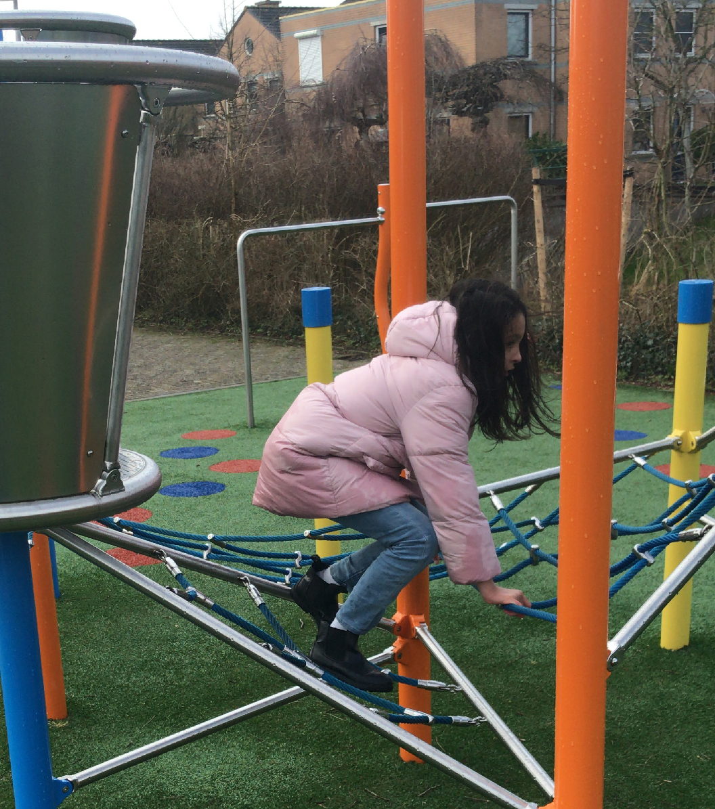

Methodiek
 Er is niet een specifieke methode die we gebruiken. In ons werk zijn we meerdere methodes tegen gekomen en in getraind. Die kunnen we hier allemaal gaan opnoemen maar dat zal u waarschijnlijk niet veel vertellen.
Wat het belangrijkste is, is dat wij geloven dat afdwingen of overheersen niet werkt. Als een kind iets niet of juist wel wil en dit geeft ongewenst gedrag zullen we eerst onderzoeken waar het gedrag vandaan komt. We zorgen voor afbakening (begrenzing) waar nodig en zullen met positieve bekrachtiging een kind stimuleren ander gedrag te laten zien.
In kleine stappen kunnen we kinderen bepaald gedrag of een vaardigheid aanleren. Verder is het belangrijk voor ons om te weten wat een kind motiveert, wat hij/ zij leuk vindt. We gebruiken dat om het kind zich thuis te laten voelen maar ook om het kind te motiveren iets ‘moeilijks’ te doen.
Activiteiten
We hebben in de woonkamer een kast vol materialen voor de kinderen. Die kast wordt regelmatig aangevuld, naargelang de behoefte van de kinderen. We hebben ontwikkelingsgericht speelgoed, sensopathisch materiaal, constructief speelgoed en ‘gewoon’ speelgoed.
We gaan regelmatig naar buiten. Soms is dat simpel hier in de buurt een wandeling van speeltuintje naar speeltuintje, fietsen/steppen/stoepkrijten voor de deur, spelen met water in de tuin of even naar het park of bos.
We maken soms ook wat grotere uitstapjes, naar een speeltuin of dierentuin, naar een station of Schiphol, een mooi bos of natuurspeeltuin. We zoeken in ieder geval altijd naar afwisseling, we vermijden routine, maar zorgen wel voor voorspelbaarheid voor de kinderen.
Oefen Situaties
Soms hebben kinderen moeite met bepaalde handelingen of situaties in hun leven. Hieronder een aantal voorbeelden waar wij mee kunnen oefenen (maar er zijn er vast nog veel meer!):
- Nagels knippen
- Tanden poetsen
- Naar de kapper gaan
- Omgaan met (onverwachtse) visite
- Zelfstandigheid in ADL handelingen
- Douchen/ haren wassen
- Omgang met dieren
- Omgang met andere kinderen (delen, volgen, (het begin van) samen spelen
- (Gevarieerd) eten aan tafel
- Omgaan met overgangen.
- Communicatie verbeteren (in welke vorm dan ook)
- Zindelijkheid/ toiletgang
Hoe werken wij?
Wij zijn een VOF, een zelfstandige twee-mans-zaak. We zijn niet verbonden aan een stichting of organisatie. We hebben geen mensen in dienst, wij doen het helemaal met zijn tweeën. Wij worden betaald via een PGB, via de wet langdurige zorg of jeugdwet.
Heeft u (nog) geen PGB voor uw kind maar wel een zorgbehoefte? Neem vooral contact met ons op, we kunnen meedenken en samen kijken hoe we het kunnen regelen. Wanneer wij een aanvraag krijgen voor opvang zullen we samen met ouders bespreken wat de wensen zijn en wat wij kunnen bieden. Omdat we beiden fulltime beschikbaar zijn (en ook op kunnen splitsen), is er veel flexibiliteit en ruimte.
Heeft u nog vragen?
Stel ze gerust!